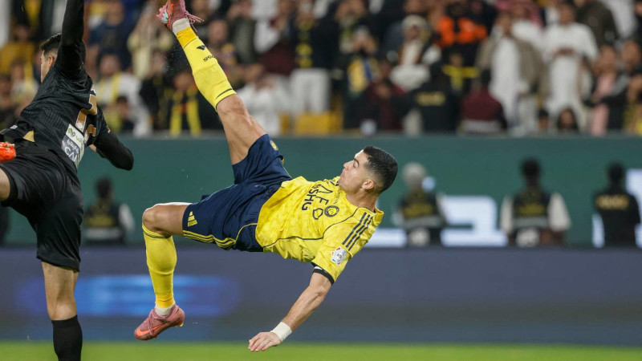
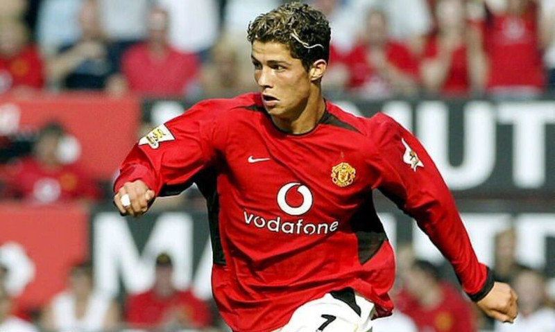

Cristiano Ronaldo: Uma Lenda Viva do Futebol Mundial
Introdução
Cristiano Ronaldo continua a ser uma das figuras mais influentes e observadas do desporto global. Com uma carreira marcada por recordes históricos, longevidade impressionante e dedicação extrema, o avançado português mantém-se no centro das atenções mesmo após mais de duas décadas no futebol profissional.
Ascensão em Madeira e o Salto para o Mundo
Da Ilha da Madeira ao Sporting CP
Nascido no Funchal, Madeira, Cristiano Ronaldo dos Santos Aveiro começou a destacar-se desde cedo pelas suas habilidades técnicas e velocidade. Aos 12 anos, mudou-se para Lisboa para integrar a academia do Sporting CP, onde evoluiu rapidamente até estrear pela equipa principal em 2002.
A Transferência para o Manchester United
O jogo contra o Manchester United em 2003 tornou-se decisivo: impressionado, Sir Alex Ferguson levou Ronaldo para Inglaterra. Ali, o jovem transformou-se numa estrela mundial, conquistando três Premier Leagues e a sua primeira Liga dos Campeões.
Glória no Real Madrid
Em 2009, foi transferido para o Real Madrid por valor recorde à época. Durante nove temporadas no clube espanhol, Cristiano acumulou:
- Quatro Ligas dos Campeões
- Dois campeonatos espanhóis
- Quatro bolas de ouro